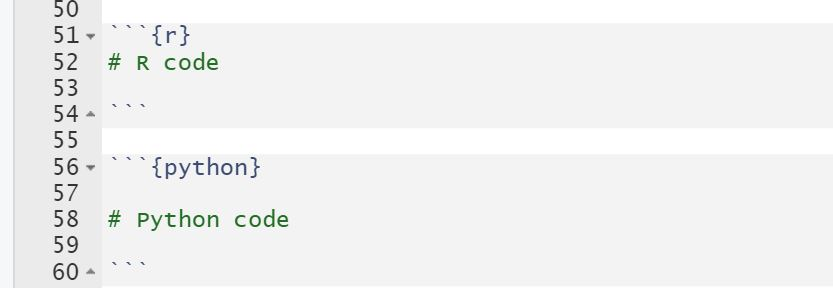

Interoperability between R and Python is too powerful!
Before going through this article, you should have some basic knowledge of R programming, Python programming(Pandas), R Studio and R markdown.
There is always a perennial debate on which programming language is better. Both languages, R and Python, have their own communities and support groups. None of them are wrong. Both R and Python languages have their own pros and cons and each language is better suited for different scenarios. Rather than debating on which language is better, in my opinion, we should try to incorporate both languages in our work. And Reticulate package in R helps to incorporate Python codes in R. Similar kinds of libraries(rpy2) are available in Python to incorporate R codes in Python.
The goal of this article is to get you started with the basic interaction between R and Python dataframes using Rmarkdown and Reticulate package. In this article, we are going to cover the following things.
Reticulate is an R package that can assist us to interact between R and Python. It is a bridge between R and Python.
Let’s get started. Firstly, you need to install Reticulate package (Installation and setup)and then install Pandas (Installing python packages) for this short demo.
In your console, execute:
install.packages(“reticulate”) and then
reticulate::conda_install(“r-reticulate”, “pandas”)
Rmarkdown can execute both R and Python codes. You can write both R and Python codes in their respective code chunks:

Lets load the library(reticulate) and set the path to a ‘conda’ executable. In this case, appropriate ‘conda’ is automatically set. To know more, execute ?reticulate and ?conda_python in your R console.
#R code
library(reticulate) #<<
conda_python() #<<[1] "C:\\Users\\Sanjay\\AppData\\Local\\r-miniconda\\envs\\r-reticulate\\python.exe"It by default sets the version of Python found on your path. But you can also set the path to your desired python version.
Copy the path in the link cars.csv to provide path to your csv file.
#Python code
import pandas as pd
car_python = pd.read_csv("cars.csv")
car_python.head(n=10) speed dist
0 4 2
1 4 10
2 7 4
3 7 22
4 8 16
5 9 10
6 10 18
7 10 26
8 10 34
9 11 17Let’s add a new column->“Speed_category” in our dataframe using pandas. - If the speed is less than 10 and greater than zero, label it as “Low speed”. - If the speed is between 10 and 20, label it as “Medium speed” - Label the rest as “High speed”. We will use this column later to create a 3D graph.
#Python code
car_python["Speed_category"]= ""
for i in range(len(car_python)):
if car_python.loc[i, "speed"]>0 and car_python.loc[i,"speed"]<=10:
car_python.loc[i, "Speed_category"]= "Low speed"
elif car_python.loc[i, "speed"]>10 and car_python.loc[i, "speed"]<20:
car_python.loc[i, "Speed_category"]= "Medium speed"
else:
car_python.loc[i, "Speed_category"]= "High speed"
car_python.head(n=10) speed dist Speed_category
0 4 2 Low speed
1 4 10 Low speed
2 7 4 Low speed
3 7 22 Low speed
4 8 16 Low speed
5 9 10 Low speed
6 10 18 Low speed
7 10 26 Low speed
8 10 34 Low speed
9 11 17 Medium speedUse py$:
Here, car_python is a variable in python that stores a dataframe, which in the code below, is used by R and stored as a dataframe in an R variable, R_cars.
#R code
R_cars<- py$car_python
head(R_cars, n=4) speed dist Speed_category
1 4 2 Low speed
2 4 10 Low speed
3 7 4 Low speed
4 7 22 Low speedA python file, time.py contains the following python function to convert speed and distance to time. Download it. In the next step, we will see how to use the time(dist, speed) function from “time.py” file to our R code :
# time.py
def time(DIST, SPEED):
return DIST/SPEEDUse source_python(“Path to your python file”) and use the python functions directly to your R code.
#R code
source_python("time.py")
for(i in seq(nrow(R_cars))){
R_cars[i, "Time"]=
time(R_cars[i, "dist"], R_cars[i, "speed"])
}
head(R_cars) speed dist Speed_category Time
1 4 2 Low speed 0.5000000
2 4 10 Low speed 2.5000000
3 7 4 Low speed 0.5714286
4 7 22 Low speed 3.1428571
5 8 16 Low speed 2.0000000
6 9 10 Low speed 1.1111111Use ‘r.’ .
In the code below, R_cars is a variable in R which is called in a python code and converted to python dataframe and stored in a variable, python_cars2.
#Python code
python_cars2 = r.R_cars
python_cars2.head(n=5) speed dist Speed_category Time
0 4.0 2.0 Low speed 0.500000
1 4.0 10.0 Low speed 2.500000
2 7.0 4.0 Low speed 0.571429
3 7.0 22.0 Low speed 3.142857
4 8.0 16.0 Low speed 2.000000Here, we are creating a scatter plot, line plot and a regression plot combined using a python dataframe,“python_cars2” in R code. -ggplot creates visually appealing graphs in R and ggplotly() function converts ggplot graphs to interactive ones.
#R code
library(ggplot2)
library(plotly)
my_plt<- ggplot(data = py$python_cars2,
aes(speed, dist))+
geom_point(aes( color= Speed_category, shape= Speed_category))+
geom_line(color= 'orange', alpha=0.5, linetype='dashed')+
geom_smooth(se= F, color='red')
my_plt %>% ggplotly()3D plots using plotly and python dataframe.
# R code
my_plot3<-plot_ly(data = py$python_cars2,
x=~speed,
y=~dist,
z=~Time) %>%
add_markers(color= ~Speed_category)
my_plot3To recapitulate, we learned about Reticulate and also viewed a short demonstration about interoperability between R and Python using the Reticulate package.
To learn more about Reticulate package, visit Reticulate.
For attribution, please cite this work as
Hamal (2022, March 7). Sanjay Hamal: Not just 'R or Python' but 'R and Python'!. Retrieved from https://sanjayhamal.com.np/post2022/2022-03-07-aboutreticulate/
BibTeX citation
@misc{hamal2022not,
author = {Hamal, Sanjay},
title = {Sanjay Hamal: Not just 'R or Python' but 'R and Python'!},
url = {https://sanjayhamal.com.np/post2022/2022-03-07-aboutreticulate/},
year = {2022}
}